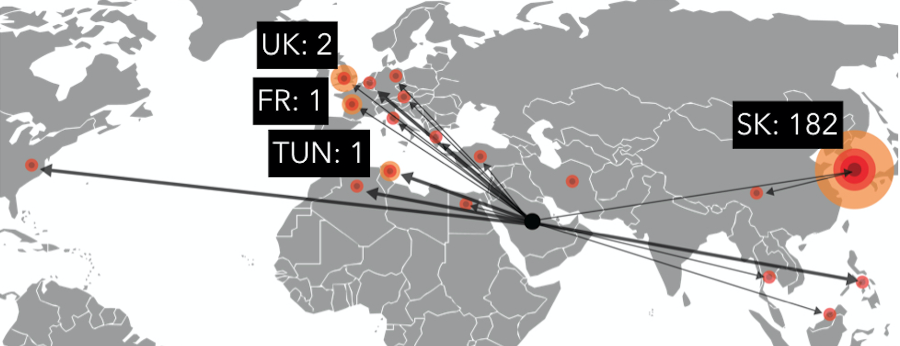
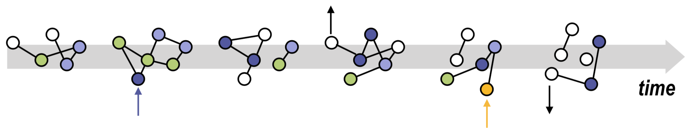

multi-pathogen dynamics
|
The spread of directly transmitted infections is driven by the dynamics of human-to-human contacts. Daily activity pattern of individuals, their social behaviour and mobility can be quantified and modelled, opening the path to the comprehension of infectious disease dynamics. I am fascinated by emerging pathogens and disease ecology. I apply network physics and complex system approaches to reach a theoretical understanding of the interplay between human behaviour and infection propagation. Beside that, I study epidemic events by designing and implementing data-driven computational models with the goal of providing quantitative assessment and projections of the epidemic evolution. |
F Pinotti, É Fleury, D Guillemot, P-Y Böelle, C Poletto PLoS Computational Biology 15(5) (2019) C Poletto, S Meloni, V Colizza, Y Moreno, A Vespignani, PLoS Computational Biology 9(8): e1003169 (2013) |
|---|
uncovering the drivers of influenza
he spread of directly transmitted infections is driven by the dynamics of human-to-human contacts. Daily activity pattern of individuals, their social behaviour and mobility can be quantified and modelled, opening the path to the comprehension of infectious disease dynamics. I am fascinated by emerging pathogens and disease ecology. I apply network physics and complex system approaches to reach a theoretical understanding of the interplay between human behaviour and infection propagation. Beside that, I study epidemic events by designing and implementing data-driven computational models with the goal of providing quantitative assessment and projections of the epidemic evolution.
he spread of directly transmitted infections is driven by the dynamics of human-to-human contacts. Daily activity pattern of individuals, their social behaviour and mobility can be quantified and modelled, opening the path to the comprehension of infectious disease dynamics. I am fascinated by emerging pathogens and disease ecology. I apply network physics and complex system approaches to reach a theoretical understanding of the interplay between human behaviour and infection propagation. Beside that, I study epidemic events by designing and implementing data-driven computational models with the goal of providing quantitative assessment and projections of the epidemic evolution.
emerging infectious diseases
he spread of directly transmitted infections is driven by the dynamics of human-to-human contacts. Daily activity pattern of individuals, their social behaviour and mobility can be quantified and modelled, opening the path to the comprehension of infectious disease dynamics. I am fascinated by emerging pathogens and disease ecology. I apply network physics and complex system approaches to reach a theoretical understanding of the interplay between human behaviour and infection propagation. Beside that, I study epidemic events by designing and implementing data-driven computational models with the goal of providing quantitative assessment and projections of the epidemic evolution.
spreading on networks
he spread of directly transmitted infections is driven by the dynamics of human-to-human contacts. Daily activity pattern of individuals, their social behaviour and mobility can be quantified and modelled, opening the path to the comprehension of infectious disease dynamics. I am fascinated by emerging pathogens and disease ecology. I apply network physics and complex system approaches to reach a theoretical understanding of the interplay between human behaviour and infection propagation. Beside that, I study epidemic events by designing and implementing data-driven computational models with the goal of providing quantitative assessment and projections of the epidemic evolution.
